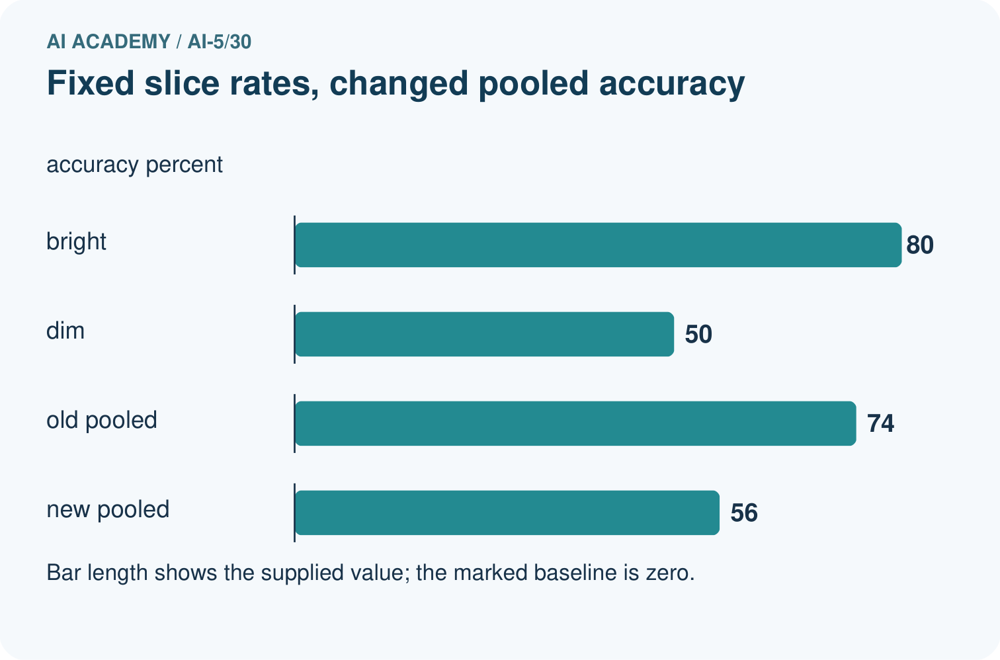
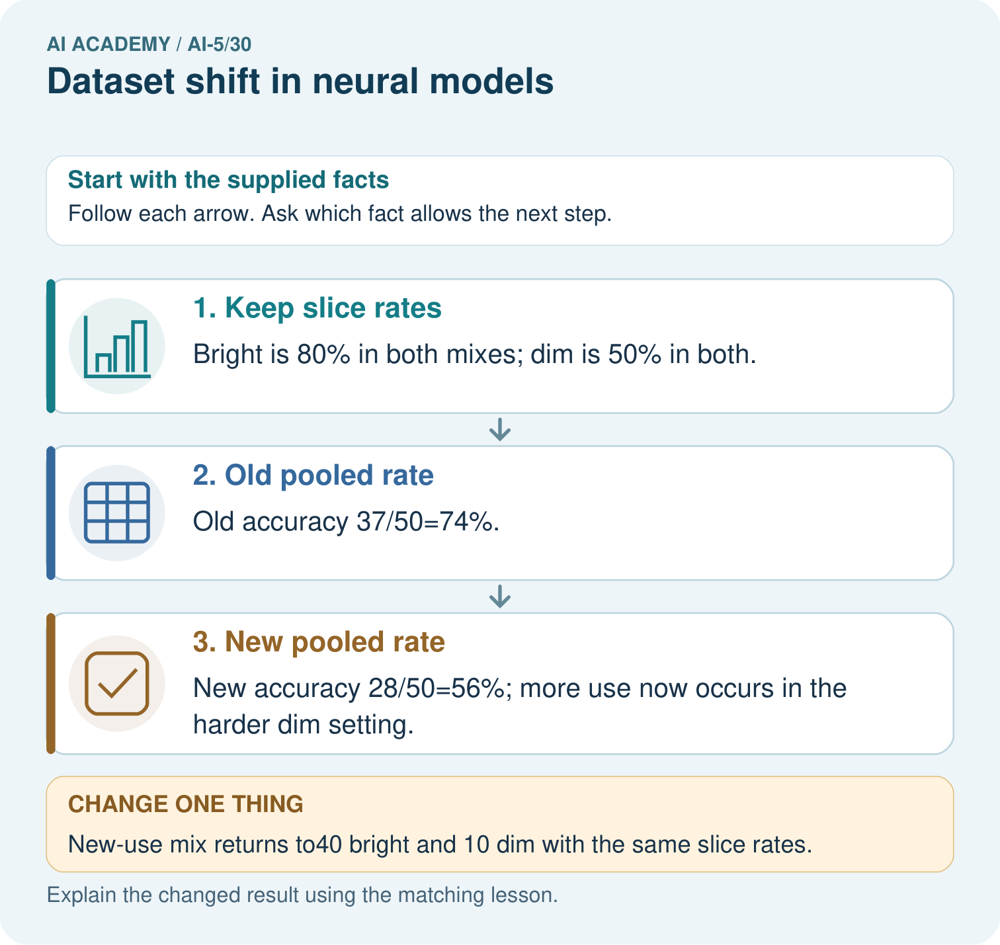

AI Academy · Level 5 · Grade 10 · Week 30 · Student lesson
Dataset shift in neural models
Learn to understand, design, build, test and explain AI systems responsibly.
Project: Image-pattern Network Investigation
Before you start
Can a high confidence score establish that a new input resembles the development data or that its prediction is correct?
Plan time to read, investigate and explain. Keep predictions separate from observations.
Student lesson · 1 of 16
Your mission
Your learning target
I can explain how a changed input mix can change overall accuracy.
I can calculate group and overall results with the correct denominators.
I can plan a shift investigation while preserving independent evaluation.
Remember before reading
Close your notes first. A rough first answer helps us choose the right starting point; it is not a score for your ability.
Without opening the old lesson, explain one key idea from Uncertainty and failure analysis. Give an example and a mistake that the idea helps you avoid.
Without opening the old lesson, explain one key idea from Similarity and normalisation. Give an example and a mistake that the idea helps you avoid.
Without opening the old lesson, explain one key idea from Augmentation and leakage. Give an example and a mistake that the idea helps you avoid.
After trying, check the relevant lesson or ask your teacher. Change the part of your explanation that the evidence shows was wrong.
This week you will practise:
Explain how a changed input mix can change overall accuracy
Calculate group and overall results with the correct denominators
Plan a shift investigation while preserving independent evaluation
Retrieve what you already know
Can a high confidence score establish that a new input resembles the development data or that its prediction is correct?
This week’s end goal
By the end, I can explain dataset shift in neural models using a traced example and a stated limitation.
Student lesson · 2 of 16
Notice the evidence
A neural image classifier developed using mostly clear pictures may later receive mostly dim pictures. Its learned weights can stay unchanged while its overall results change. Dataset shift concerns changes in the data encountered, including inputs, label frequencies or the relationship between inputs and labels. A shift does not always reduce accuracy, and an accuracy change alone does not identify its cause.
Use the fictional audit below. Clear and dim are disjoint groups defined before the audit, and every case belongs to exactly one group. The same model checkpoint, preprocessing and prediction threshold are used throughout. Counts are constructed teaching data, not results from a deployed model. Both cohorts have checked reference labels.
| Cohort | Group | Cases | Correct |
|---|---|---|---|
| Development audit | Clear | 80 | 72 |
| Development audit | Dim | 20 | 10 |
| New-use audit | Clear | 20 | 18 |
| New-use audit | Dim | 80 | 40 |
Clear accuracy is 72 / 80 = 90 percent in development and 18 / 20 = 90 percent in new use. Dim accuracy is 10 / 20 = 50 percent and 40 / 80 = 50 percent. The observed group rates are unchanged, but the group proportions are different.
Student lesson · 3 of 16
See how it works
Development accuracy is (72 + 10) / (80 + 20) = 82 percent. New-use accuracy is (18 + 40) / (20 + 80) = 58 percent. The drop is 24 percentage points. Taking the unweighted mean of 90 and 50 gives 70 percent, which is not either cohort’s overall accuracy because neither cohort has equal group sizes.
def accuracy(groups):
if not groups:
raise ValueError("Need at least one group")
total = correct = 0
for n, k in groups:
if n <= 0 or not 0 <= k <= n:
raise ValueError("Invalid group counts")
total += n
correct += k
return correct / total
development = [(80, 72), (20, 10)]
new_use = [(20, 18), (80, 40)]
old = accuracy(development)
new = accuracy(new_use)
print(round(100 * old, 1)) # 82.0
print(round(100 * new, 1)) # 58.0
print(round(100 * (old - new), 1)) # 24.0Each pair is (cases, correct), and the function assumes integer counts for non-overlapping groups. It rejects empty inputs, groups with no cases and impossible correct counts. A group with no observed cases has an undefined empirical accuracy, not zero accuracy. Do not count the same example in two groups when forming an overall total.
Equivalently, weight each group accuracy by its share of cases: development is 0.80 times 0.90 + 0.20 times 0.50 = 0.82; new use is 0.20 times 0.90 + 0.80 times 0.50 = 0.58.
Connect the picture and the explanation
Point to the input, the deciding step and the result in this week’s visual. Explain the same step in ordinary words. A picture helps when you can say what each part represents.
Student lesson · 4 of 16
Compare the cases
Compare a familiar case with a changed case
Calculate overall correct counts, accuracy and errors in both cohorts, plus the percentage-point drop. Explain why averaging 90 percent and 50 percent without weights gives the wrong overall result here.
Change one thing in the pictured case
Change: New-use mix returns to40 bright and 10 dim with the same slice rates.
Prediction: Pooled accuracy returns to74%.
Reason: The mixture weights change, while each slice’s conditional performance stays fixed.
Student lesson · 5 of 16
Words that unlock the idea
| Word | Meaning |
|---|---|
| Dataset shift | A change in the distribution of inputs, labels or their relationship between settings |
| Subgroup | A declared subset of examples sharing a relevant condition |
| Group mix | The proportions of examples belonging to different groups |
| Monitoring | Repeatedly checking recorded inputs, outputs and available outcomes against a reference |
Student lesson · 6 of 16
Follow a worked example
The same group rates meet a different mix
The arithmetic explains this constructed aggregate difference. It does not prove that dim lighting caused each real error or that these group rates will stay fixed in future samples. Report group counts and uncertainty about generalisation. Review specific errors and reference labels as in Week 29.
Learn from the worked case
Cover the result before checking it. Say what is given, choose the procedure, and follow one step at a time. Then uncover the result and explain your first mismatch. Ask why a step is allowed, not only what number it produces.
A pictorial worked case: Dataset shift in neural models
Separate within-setting performance from changing setting proportions.
The facts we will use
Toy old-use mix: bright 40 cases32 correct; dim 10 cases5 correct. New-use mix: bright 10 cases8 correct; dim 40 cases20 correct.
All inputs and outcomes in this worked example are invented classroom data; no real model run is claimed.


Read the picture one step at a time
Why this result follows
A pooled rate depends on how often each condition appears as well as performance within that condition. Bright and dim accuracy stay fixed in this example. The new use contains more dim cases, so its pooled accuracy falls. Report both group counts and group rates before concluding that the network itself deteriorated.
What this example does not establish
Real shift can also change labels, sensors and within-slice behaviour; this toy decomposition isolates only mixture change.
Read the labelled picture: Did the supplied model’s dim-light accuracy deteriorate? Point to the relevant step in the picture, then write the changed result and the rule or evidence that supports it.
Change one thing: New-use mix returns to40 bright and 10 dim with the same slice rates. Predict the result before checking the explanation. What remains the same?
Student lesson · 7 of 16
Find and repair a mistake
Start with model and input-pipeline version checks. A changed resize operation, channel order or unit conversion is an implementation change, not evidence that the input population itself shifted. Compare image conditions, missing values, source groups and label definitions. A neural network may have learned a shortcut tied to a background or capture condition; that is a hypothesis to test, not a conclusion from a histogram.
Input monitoring without new reference labels can reveal a changed group mix. It cannot calculate current accuracy or prove that the relationship between inputs and labels stayed the same. Conversely, stable input summaries can miss a changed labelling policy. Obtain a representative, correctly labelled audit sample and document unresolved label quality.
For a controlled lighting study, keep scene identity and the label fixed while varying lighting. Keep related images together in one split. If new data guide retraining or threshold choices, they are development data; reserve separate source groups or a later appropriate time period for final evaluation. More data alone do not guarantee that a shortcut is removed.
Locate the earliest unsupported step
New-use monitoring shows more dim images but reference labels have not arrived. What can you report now, what can you not calculate, and what checks should precede blaming the neural network?
Student lesson · 8 of 16
Practise together
From the table, calculate clear and dim accuracy in each cohort and the clear/dim proportions. Which observed quantities change, and which remain the same?
Practise with less help: Use the right denominator
Use workbook W2 for the connected example “Dataset shift in neural models”. First fill the input and rule boxes. Try the middle steps before asking for a hint. After a hint, try the next step yourself.
| Plan | Do | Check |
|---|---|---|
| What is given? Which rule or procedure applies? | Record each intermediate step. | Does the result follow? What remains unknown? |
Explain your trace to a partner. Your partner points to one step to check. Swap roles on the next case. Each person writes their own explanation.
Check your reasoning
Use the worked case for Dataset shift in neural models. Proposed explanation: “Average the percentages regardless of group sizes”. Decide whether this explanation is supported. Point to the step or supplied fact that decides; explain your repair if needed.
Answer on your own before discussion. If you are unsure, say which step you need help with.
Explain the picture
Did the supplied model’s dim-light accuracy deteriorate? Point to the relevant step in the picture, then write the changed result and the rule or evidence that supports it.
This is supported practice. Keep the separately named independent case for an attempt before feedback.
Student lesson · 9 of 16
Run the investigation
Predict, investigate and preserve the evidence
Calculate overall correct counts, accuracy and errors in both cohorts, plus the percentage-point drop. Explain why averaging 90 percent and 50 percent without weights gives the wrong overall result here.
def accuracy(groups):
if not groups:
raise ValueError("Need at least one group")
total = correct = 0
for n, k in groups:
if n <= 0 or not 0 <= k <= n:
raise ValueError("Invalid group counts")
total += n
correct += k
return correct / total
development = [(80, 72), (20, 10)]
new_use = [(20, 18), (80, 40)]
old = accuracy(development)
new = accuracy(new_use)
print(round(100 * old, 1)) # 82.0
print(round(100 * new, 1)) # 58.0
print(round(100 * (old - new), 1)) # 24.0| Record | Your evidence |
|---|---|
| Given input and fixed rule | |
| Prediction before checking | |
| Actual result, or “not run” | |
| First mismatch and one explanation | |
| Boundary or missing input and expected response |
On paper, trace the supplied procedure. If code is provided, predict before running it in a local practice file. Never write an expected answer as though it were an observed run.
Plan → try → check
Before trying: what do I expect, and why? While trying: which step could first go wrong? Afterwards: what did I actually observe, and what should change? Keep “not run” if you only traced the procedure.
Student lesson · 10 of 16
Build your understanding
Explain → apply → challenge
From the table, calculate clear and dim accuracy in each cohort and the clear/dim proportions. Which observed quantities change, and which remain the same?
New-use monitoring shows more dim images but reference labels have not arrived. What can you report now, what can you not calculate, and what checks should precede blaming the neural network?
A team retrains using new-use errors, then evaluates on those same images and their brightened copies. Explain why the score is not independent evidence and propose a comparison that includes the original model.
Student lesson · 11 of 16
Connect your project
Add a labelled dataset shift in neural models evidence sheet to Image-pattern Network Investigation. Show how you can explain how a changed input mix can change overall accuracy. Use the supplied fictional case and keep its inputs, intermediate steps, calculation or prediction, and limitation. Connect this record to last week’s record; a matching answer without a trace is insufficient.
| Project evidence | Record |
|---|---|
| Component and version | |
| Inputs permitted at prediction time | |
| Trace and comparison with earlier work | |
| Failure, limit and human review |
Evidence for your project
For your Image-pattern Network Investigation, save the input, procedure, observed result and limitation of this check. Label this worked example as practice; use a different, previously unreviewed case when checking independent understanding.
Student lesson · 12 of 16
Show what you know
Possible responses include fixing a confirmed pipeline bug, gathering missing training coverage, changing a representation or routing some cases for review. Choose a response based on evidence. Compare the original and revised model on identical reserved cases, report both group and overall results, and measure review workload if a review policy is used. Preserve the original checkpoint for comparison.
Record the reference period, group definitions, model and pipeline versions, counts, available labels, decisions and follow-up outcomes. Avoid silently replacing the baseline or the evaluation set. Next week measures efficiency and resource use alongside model quality.
A team retrains using new-use errors, then evaluates on those same images and their brightened copies. Explain why the score is not independent evidence and propose a comparison that includes the original model.
Student lesson · 13 of 16
Study a complete case
Complete evidence record
The same group rates meet a different mix
Follow the input through the stated procedure to its result. Cover the result first, predict it, then explain every intermediate step. The text/table accompanies the figure so the example can be read without colour.
Student lesson · 14 of 16
Try a new case independently
Independent case: Analyse a new mixture independently
A separate audit has development groups P: 60 cases, 48 correct and Q: 40 cases, 20 correct. New-use groups are P: 20 cases, 16 correct and Q: 80 cases, 40 correct. Compute each group rate, both overall accuracies, and the percentage-point change. Under the same group rates, what accuracy would equal-sized P and Q groups have?
Attempt this case before feedback. Record any help. Earlier examples below are further practice; a case already practised with feedback cannot establish fresh transfer.
Attempt this without hints
A separate audit has development groups P: 60 cases, 48 correct and Q: 40 cases, 20 correct. New-use groups are P: 20 cases, 16 correct and Q: 80 cases, 40 correct. Compute each group rate, both overall accuracies, and the percentage-point change. Under the same group rates, what accuracy would equal-sized P and Q groups have?
Record support used: none, hint or teacher explanation. After feedback, a different case is needed to demonstrate independence.
Use feedback to improve
Attempt the independent case before hints. Record whether you worked alone, used a hint or followed a model. After feedback, fix the first unsupported step and explain why it changed. A later check uses a changed case, not a copied answer.
Student lesson · 15 of 16
Your lesson route
Start with this question: Separate within-setting performance from changing setting proportions.
| By the end, I can | How I will show it |
|---|---|
| Explain how a changed input mix can change overall accuracy | Explain the deciding step, show a trace or test, and state one limit. |
| Calculate group and overall results with the correct denominators | Explain the deciding step, show a trace or test, and state one limit. |
| Plan a shift investigation while preserving independent evaluation | Explain the deciding step, show a trace or test, and state one limit. |
Remember → watch and explain → try with help → investigate → try independently → keep project evidence. Your teacher may spread this lesson across several classes.
Keep your first prediction. Compare it with what the evidence shows and explain any change.
Student lesson · 16 of 16
Finish and return
Close your notes. Explain this goal in your own words: Explain how a changed input mix can change overall accuracy
If you are unsure, return to the worked picture and explain one arrow. If you are ready, change an input or assumption and justify your prediction.
Save your workbook evidence. At the next review, try a different case before opening your old answer.